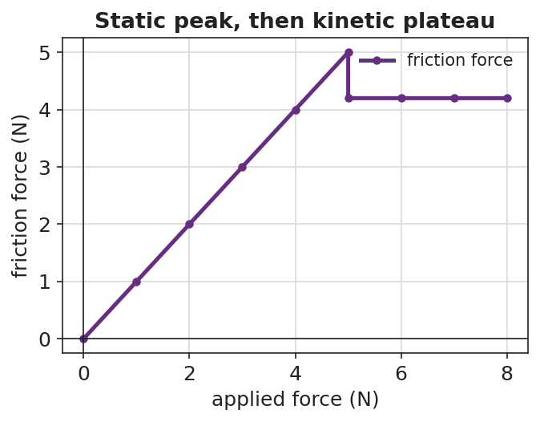

Unit: Forces — Lesson 04: Friction
Phenomenon
Your teacher drags the same sneaker at the same speed across tile, then carpet, then sandpaper — and the spring scale reads a different number every time. Then a heavy book will not slide at all… until one harder push, and it suddenly breaks loose and slides easily.
The sneaker never changed. So what made the scale read differently — and why did the book suddenly "let go"?
Driving Question
What decides how hard friction pushes back — and why does an object suddenly "let go" and start sliding?
Notice & Wonder
Watch the sneaker drag and the stuck book. Write two things you notice and two things you wonder. Use the word force in at least one line.
Initial Model
Draw the sneaker being dragged. Draw an arrow for the pull (spring scale) and an arrow for whatever pushes back. Then predict which surface needs the biggest pull, and why.
Investigate
Slowly raise the applied force with the slider. At first the box does not move: static friction grows to exactly match your push, so the net force stays zero. Once your push beats the static maximum, the box breaks loose and slides — now kinetic friction (a bit smaller, roughly constant) opposes it. Watch the friction readout climb, peak, then drop.
Friction force: 0 N · State: at rest (static friction)
Static maximum ≈ 8 N · kinetic ≈ 6 N (μ·FN). Friction only opposes — it never pushes the box forward.
The friction force climbs through the static region to a peak, then drops to a steadier kinetic plateau — exactly the breakaway pattern:

Make It Make Sense
- Why is it harder to start a desk sliding than to keep it sliding once it moves?
- Two boxes sit on the same floor; one is heavier. Which needs more force to slide, and why?
- The same sneaker reads a bigger pull on sandpaper than on tile. What about the sandpaper makes friction larger?
Stuck? Sentence frame
"Friction is ___ when the object is not moving and ___ when it slides; it gets bigger when ___ or ___."
Key Vocabulary (max 3)
- friction — a contact force that opposes relative motion (or attempted motion) between two surfaces; on the Reference Table, Ff = μ·FN
- static friction — friction on an object that is not yet sliding; it varies to match the applied force up to a maximum
- kinetic friction — friction on an object that is already sliding; it is roughly constant
Revise Your Model
Return to your sneaker drawing. Label the push-back arrow friction. Add one sentence: when is it static, when is it kinetic, and what two things set its size? Use Ff = μ·FN.
Return to the Phenomenon
A phone in a grippy case slides toward a table edge. In one sentence using friction and normal force, why does a grippy case help it stop without sliding off? A grippy case raises μ, so even a modest normal force gives enough friction to keep the phone from sliding — the design controls how the phone stops.
Exit Ticket + Closing Reflection
- (a) You push a crate gently and it does not move. Name the force opposing your push and say whether it is static or kinetic. Explain.
(b) A 200 N crate sits on a floor with μ = 0.30 between the crate and the floor. Calculate the kinetic friction force as it slides. Show Ff = μ·FN.
(c) Cause and Effect: name one change that would make the friction force larger. - Reflection: Whose idea at your station changed how you think about friction today?